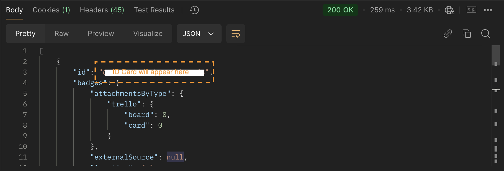
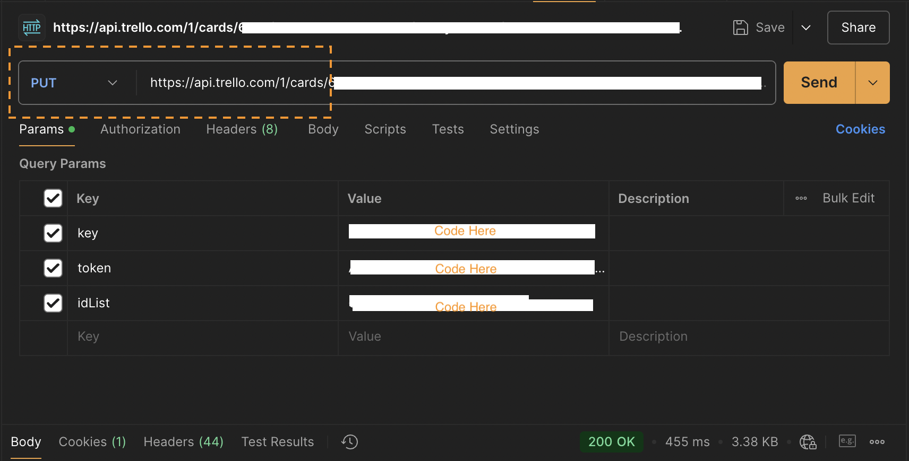
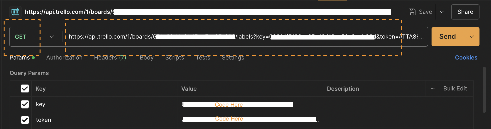
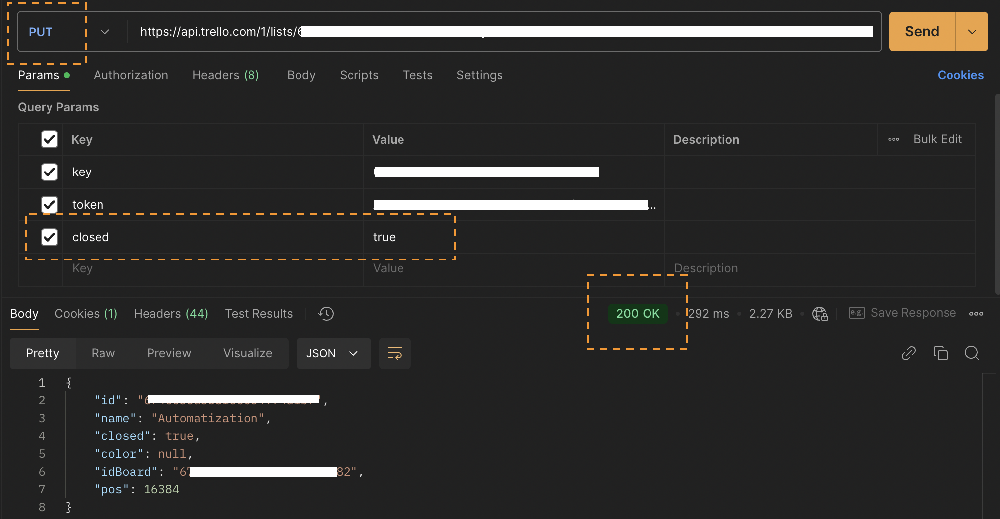

Trello API: Managing Cards and Lists
This guide demonstrates how to manage Trello cards and lists using the Trello API. Follow the steps below to move cards, apply labels, and archive lists.
Step 1: Retrieve the Card ID
To update or move a card, you must first retrieve its unique ID. Use the following GET request:
GET https://api.trello.com/1/boards/{boardID}/cards?key=YOUR_API_KEY&token=YOUR_ACCESS_TOKEN

Step 2: Move a Card to Another List
Once you have the Card ID, move it to another list by making a PUT request:
PUT https://api.trello.com/1/cards/{cardID}
Content-Type: application/json
{
"idList": "{newListID}"
}

Step 3: Add a Label to a Card
Retrieve available labels and apply one to a card using a POST request:
POST https://api.trello.com/1/cards/{cardID}/idLabels
Content-Type: application/json
{
"value": "{labelID}"
}

Step 4: Archive a List
To archive a list, send a PUT request setting closed to true:
PUT https://api.trello.com/1/lists/{listID}
Content-Type: application/json
{
"closed": true
}

Common Errors & Troubleshooting
| Error Code | Possible Cause | Solution |
|---|---|---|
| 401 Unauthorized | Invalid API Key or Token | Ensure your API Key and Token are correct. |
| 400 Bad Request | Missing required parameters | Confirm that the idList or cardID parameter is included. |
| 404 Not Found | Card or List ID does not exist | Verify that the cardID or listID is valid. |